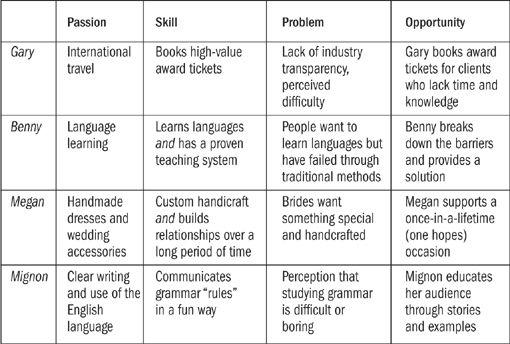

“Passion, though a bad regulator,
is a powerful spring.”
—RALPH WALDO EMERSON
Like many of us, Gary Leff begins his day with email. As a CFO for two university research centers in northern Virginia, he’s in touch with colleagues from morning to night. It’s a good job that he enjoys, and he has no plans to leave. But the “early early” morning email traffic comes from another source: Gary’s part-time business as a specific kind of consultant.
Like me, Gary is an active “travel hacker,” earning hundreds of thousands of frequent flyer miles every year through various airline promotions. Many executives also earn plenty of miles, usually from business credit card charges, but earning miles and redeeming them for actual vacations are two different things. The executives typically have no idea how the process works and don’t have the time to learn. How many miles do you need for any specific trip? What if the airline tells you no seats are available? If you don’t know what you’re doing, it’s easy to get frustrated and give up.
That’s where Gary comes in. For a fee (currently $250 for up to two passengers with the same itinerary), Gary will set up the trip of your dreams based on preferences you select. Clients tell Gary where they want to go, which airline their miles are coming from, and any restrictions they have on their travel dates. Then Gary gets to work, combing databases to check on availability, phoning the airlines, and taking advantage of every loophole.
It may sound strange to pay $250 for something you could do on your own for free, but the value Gary provides through the service is immense: Many of the trips he arranges would otherwise cost $5,000 or more. He specializes in first- and business-class itineraries, and some of them feature as many as six airlines on a single award ticket. You want a free stopover in Paris en route to Johannesburg? No problem. You want to allow plenty of time to visit the Lufthansa first-class terminal in Frankfurt before continuing on to Singapore? Done. If he’s not successful in booking your trip, you don’t pay—the business succeeds only when it provides real value to clients.
In addition to executives, Gary’s clients are often retirees headed for cruises and couples planning a once-in-a-lifetime trip: basically anyone who has a bunch of miles but doesn’t want to go through the hassle of figuring out how to use them. Business picked up after he was featured in Condé Nast Traveler, but aside from calling the airlines to book the tickets, Gary manages communications entirely by email. The part-time job brought in $75,000 last year and is on track to top six figures annually. Since he has the full-time CFO gig and other business ventures, Gary invests the money instead of spending it. “I honestly do this because it’s fun,” he says. Meanwhile, he cashes in miles from his own bulging mileage accounts to travel the world with his wife, squeezing in luxury trips to the Philippines and Thailand between financial planning meetings back home.
Gary’s business, like many others we’ll look at, can be described as a follow-your-passion business. Gary was passionate about travel and had found a number of creative ways to enjoy first-class trips around the world at economy prices. He started helping people do the same thing, first as a volunteer community member for several travel forums, then on a blog, and then on an individual basis for people he knew. Word got around—“Hey, Gary, I’d like to take my wife to Europe and I have all these miles … What do I do?”—and before he knew it, he had more requests for help than he could handle.
The next logical step was to start charging. He built a very basic website and set up shop in a short period of time, not entirely sure what would happen next. Would anyone purchase this unusual service? Well, yes, they would—and even though Gary is content in his day job and has no plans to leave, he no longer depends on it. If something changed at work, he’d have no problem living off the funds from his side business or ramping it up to something bigger.
Gary’s story is inspiring but not all that uncommon. As I foraged for case studies and went from interview to interview, I learned to stop being surprised when I heard that a coupon-clipping website run by a single mom brought in $60,000 part-time or that a handmade toy business was closing in on $250,000 and hiring multiple employees.
Instant Consultant Biz
Gary’s business is great, and no one cares that his website looks like it was made ten years ago. He also didn’t wait for someone to accredit or endorse him for his business. There is no “consulting school” or degree. You can start a new business as a consultant in about one day, if not sooner.
Follow these two basic rules:
1. Pick something specific as opposed to something general. Don’t be a “business consultant” or a “life coach”—get specific about what you can really do for someone.
2. No one values a $15-an-hour consultant, so do not underprice your service. Since you probably won’t have forty hours of billable work every week, charge at least $100 an hour or a comparable fixed rate for the benefit you provide.
OPENING FOR BUSINESS*
I will help clients _________. After hiring me, they will receive [core benefit + secondary benefit].
I will charge $xxx per hour or a flat rate of _____ per service. This rate is fair to the client and to me.
My basic website will contain these elements:
a. The core benefit that I provide for clients and what qualifies me to provide it (remember that qualifications may have nothing to do with education or certifications; Gary is qualified to book vacations with miles because he’s done it for himself many times)
b. At least two stories of how others have been helped by the service (if you don’t have paying clients yet, do the work for free with someone you know)
c. Pricing details (always be up front about fees; never make potential clients write or call to find out how much something costs)
d. How to hire me immediately (this should be very easy)
I will find clients through [word-of-mouth, Google, blogging, standing on the street corner, etc.].
I will have my first client on or before ____·[short deadline].
Welcome to consulting! You’re now in business.
*You can create, customize, and download your own “Instant Consultant Biz” template at 100startup.com.
When I met Megan Hunt at the co-working space she owns in Omaha, it was 6 p.m. and she was just coming to work. Megan keeps odd hours, preferring to work through the night with her infant in tow. Unlike most of our stories, Megan was determined to be an entrepreneur from a young age. “I started when I was nineteen and a sophomore in college,” she said. “I never intended to do anything but work for myself. I always knew that I didn’t want a conventional job, so I never expected to resign myself to a fate other than the one I wanted as an artist. I worked a few eight-to-five desk jobs, but I wasn’t discouraged because I only saw them as the means to an end: gaining enough capital to start my own full-time venture.”
Megan now makes custom wedding dresses and bridal accessories full-time, selling them to women age twenty-four to thirty all over the world (42 percent of her customer base is international). After earning $40,000 her first year, she’s now scaling up by carefully hiring two employees as well as founding the co-working space where her business is situated. (Since she’s the owner, no one can complain about her night-owl work habits.)
Almost every business owner we’ll meet in our journey has at least one disaster story, when something went off track or even threatened the life of the business. In Megan’s case, the big disaster came right before the holiday season in 2010. After spending seventy hours crafting high-end flower kits for two customers, she shipped them out via the U.S. Postal Service … and the packages disappeared into the postal service void. “It was terrible,” Megan told me. “I had to refund money I didn’t have, and the worst part was thinking about the brides who now didn’t have flowers for their wedding.” But she did what she had to do—refunded money, wrote teary apology notes, posted the whole story on her blog for others to learn from—and moved on.
Aside from vowing never to use USPS again, Megan loves her business and wouldn’t want to do anything differently. “I spend every day learning from people who inspire and motivate me in the co-working space,” she says, “and I interact every day with customers who are in the midst of their own love stories. I have a young daughter who I am able to bring to work. My earning potential is unlimited, and I am free to reinvest in my happiness with every dollar that comes in.”
It all sounds so simple: Pick something you love and build a business around it, the way Gary and Megan did. Cha-ching! But is it really that easy? As you might expect, the real answer is more complex. Building a business around a passion can be a great fit for many people, but not everyone.
In the rush to pursue a passion, a number of things tend to get left out. First, you can’t pursue just any passion—there are plenty of things you may be passionate about that no one will pay you for. Remember the all-important lesson of convergence we’ve been looking at throughout the book. You must focus continually on how your project can help other people, and why they’ll care about what you’re offering in the first place. I like to eat pizza, but no matter how passionate I am, it’s doubtful I could craft a career around my love for mushrooms and black olives. Instead, I had to find something more interesting to the rest of the world.
Sometimes a false start precedes a successful microbusiness. In Reno, Nevada, Mignon Fogarty created the QDT Network, best known for her signature show Grammar Girl. The show was a huge hit almost from the beginning, spawning a line of books, related programs, and non-stop media attention. But before she was Grammar Girl, Mignon pursued a similar idea in an unsuccessful attempt to build popularity through podcasting. Here’s how she tells the story:
Before I launched the successful Grammar Girl podcast, I was the host of a science podcast called Absolute Science. I loved doing that show and I was passionate about it. I actually put more effort into promoting that show than I did for the Grammar Girl podcast, and although Absolute Science was well received, after doing it for nearly a year it was clear that the show was never going to make enough money to make it worth the time required to produce it.
Mignon changed course, trading science for grammar. The answer wasn’t to abandon her passion altogether but to make sure she connected the right passion with the right audience.
| “Absolute Science” | “Grammar Girl” | |
| Passion … but not | Passion … and a | |
| enough audience | substantial audience |
Next, many successful follow-your-passion business owners understand an important principle that aspiring (and unsuccessful) business owners don’t. The missing piece is that you usually don’t get paid for your hobby itself; you get paid for helping other people pursue the hobby or for something indirectly related to it. This point is critical. I began my writing career by sharing stories about a quest to visit every country in the world, but I don’t get paid for that. I have to create value in my business the same way anyone else does—without real value, I wouldn’t get paid, and the travel would be just a hobby (albeit a passionate one).
Let’s look at another example. Benny Lewis, originally from Ireland, likes to say he gets paid to learn languages. Benny’s story is inspiring: He makes more than $65,000 a year, reports to no one, and goes from country to country immersing himself in different cultures. But as we look at the story more carefully, we find that there’s more to it.
I first met Benny on a layover in Bangkok. Benny doesn’t drink, which is probably a good thing because he is quite possibly the most naturally enthusiastic person I’ve ever met. Over a couple of mango juices, he told me his story. Twenty-four years old, Benny had been traveling abroad for the past two years. As a child, he spoke only English. He graduated with an engineering degree and no known aptitude for foreign languages. Moving to Spain after graduation and consulting with clients back home, he became determined to learn Spanish.
Six months into his stay in Seville, however, Benny felt frustrated with still not knowing the language, spending most of his time with a group of expatriates and Spaniards who spoke English. He decided to speak only Spanish for an entire month, with no exceptions. At first it was awkward and embarrassing; he didn’t know how to conjugate verbs, so he just used the present tense and wildly waved his arms behind him to indicate that something had already happened. But the funny thing about using only another language is that you learn it much more quickly than when you rely on English as a backup. Within a few weeks, Benny was speaking comfortably. The month-long immersion was much better than the six months before it, and he was now hooked on learning other languages. He moved to Berlin and learned German, then to Paris to learn French, and then to Prague to learn Czech, a notoriously difficult language.
Putting his engineering career on hold, Benny started traveling and never stopped, working at short-term consulting jobs to pay the bills wherever he could. With his non-stop energy, he got up in the middle of the night for conference calls in North America. Being single (and not drinking) made it easy to live on a small amount of money, but it was obvious that Benny had a great skill to share with the world. His message to everyone who would listen—by this point the whole bar of expats had heard about it—was that anyone can learn another language even if you think you aren’t “gifted” or spoke only one language as a child.
Benny’s method was based on proven success. Within two years, he had learned seven languages (fluently!), and regularly tested himself with native speakers he met while traveling. Once in a while, he tutored someone in language learning, but the approach was scattershot.
“Benny, your skill is amazing,” I said when I met him that night in Bangkok. “Why don’t you get more serious about teaching this method to more people?” (To be fair, I can’t take much credit for pushing him. Benny had been thinking about the idea for a while, and many other people had gathered around the bar at that point, encouraging him.)
He toyed with a few different names for the idea before hitting on the perfect one: Fluent in 3 Months. Everyone raised a bottle of beer in approval while Benny sipped his juice. Just as soon as he learned Thai (his eighth language), he would get to work outlining everything he knew about language hacking.
The vision was solid, but the work was tough. Benny struggled with fitting everything he knew into a collection of documents, videos, and interviews. He kept waiting for it to be perfect … and then he kept waiting. “I finally just had to give up on perfection and get the thing out the door,” he said later. The course is now available in eight languages—all taught by Benny himself, naturally.
To market Fluent in 3 Months, Benny made YouTube videos giving a tour of his apartment in five languages (including different dialects). He stood on street corners in various countries and sang in the national language, dressing up in native costume and offering free hugs. When I ran into him next in Texas, he was wearing a set of goggles on top of a hat. “Uh, what’s with the goggles?” I asked. His answer was typical: “I wear them when I travel so people will ask, ‘Why are you wearing those?’ Then I have an easy way to get to know them and try to learn their language.”
Benny says he gets paid for learning languages, but as you can see, there’s more to the story: He actually gets paid for helping people. True, the inspirational side is important (people enjoy watching and sharing his videos), but without the helpfulness, he would just be the sober Irishman who speaks a lot of languages and there would be no business model.
Along with first understanding that not every passion makes a good business and then realizing that businesses and hobbies are often distinct, there’s one more important point: You may just not want to combine your hobby with your work. If the hobby or passion serves as an important stress reliever from your day job or other commitments, are you sure you want to assume full-time responsibility for your hobby? Some people find that it’s better to keep their passion separate from their work.
Review the Reality Check Checklist below to see if a follow-your-passion business is a good idea for you. Benjamin Franklin, an old-school entrepreneur, put it this way: “If passion drives you, let reason hold the reins.”
Questions for You
Instead of just during your free time, would you enjoy pursuing your hobby at least twenty hours a week?
Questions for the Marketplace
Note: Chapter 6 looks at market testing in more detail. If you’re not sure how to answer the marketplace questions, stay tuned.
When I asked our group of unexpected entrepreneurs about the follow-your-passion model, I frequently heard a nuanced answer. Almost no one said, “Yes! You should always follow your passion wherever it leads.” Similarly, almost no one dismissed the idea out of hand. The nuance comes from the idea that passion plus good business sense creates an actual business.
To understand how passion can sometimes translate into a profitable business, look at the chart on this page. In addition to passion, you must develop a skill that provides a solution to a problem. Only when passion merges with a skill that other people value can you truly follow your passion to the bank.

Another way to think about it is
(Passion + skill) → (problem + marketplace) = opportunity
Although it is important, passion is just one part of the equation. If Gary’s skill at booking award tickets suddenly disappeared, it wouldn’t matter how passionate he is about travel. No matter how passionate Megan is about her dresses, if a willing marketplace didn’t exist that is eager to buy them, she couldn’t be in business.
The next step is to transfer your passion into a business model. Everyone we’ve met thus far has used a slightly different business model to monetize his or her project, so let’s look at how each of these four examples cashed in.
Gary is paid through a set fee (currently $250) for his specialized consulting service.
Benny sells a direct product (language hacking guide) for a fixed price from his website.
Megan also sells a direct product (custom dresses and wedding accessories), but her pricing is variable.
Mignon provides her popular podcast service for free to listeners, underwritten by advertising and sponsorship.
Each model has specific strengths and disadvantages. Gary makes $250 at a time … but then has to “earn” the fee by arranging someone’s travel. Benny sells his guide for just $29 … but the process is automated and he doesn’t have to do anything after the money comes in.
Megan sells a variety of products (and also owns the co-working space), so her income is diversified … but the main project of making wedding dresses is labor-intensive. Mignon’s sponsors provide reliable, regular income … but she loses a certain amount of control by introducing advertising in her communication to the audience.
Despite the differences, the core goal for each of these approaches is finding the right kind of product or service for the right group of people. Without the right fit, none of the projects would be successful. But when you find the formula, there’s no denying that a business built on the right kind of passion can be highly successful.
In Venice, California, Gabriella Redding built a million-dollar hula-hoop business after losing weight through hooping. Before that she was a tattoo artist and then a restaurant owner. “I’m an artist,” she told Forbes magazine. “Artists are serial entrepreneurs because we have to figure out ways to sell our work. It’s either that or you become a starving artist, and I’m not a starving artist.”
Compared with working just to make a living, it’s much easier to do what you love and get paid for it. You just have to find the right passion, the right audience, and the right business model.
KEY POINTS